Psychometric Test - Aptitude and Personality Test
Psychometric test for recruitment: invite applicants to timed aptitude and personality tests (DISC, Big Five) and get scored results in Odoo.
- Price
- $59
- Odoo versions
- 17.0
- 18.0
- 19.0
- 20.0
- Technical name
tamadoo_psychometric_test- License
- OPL-1
Odoo 20.0: not listed on the store yet. Ask at tama.odoo@gmail.com.

Text and screenshots below are from the Odoo 20.0 version of this module.
Invite candidates by email to timed aptitude and personality tests. They answer on any phone, no account needed; you get the score, the pass / fail and the personality profile in Odoo.
The candidate's experience
A clean, mobile-first page in your company colour. Answers save as they go; the timer lives on the server.
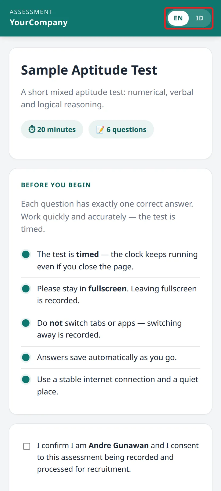
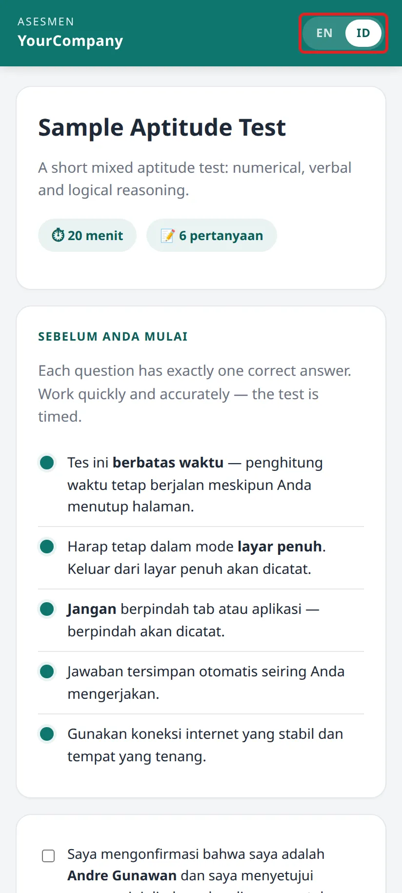
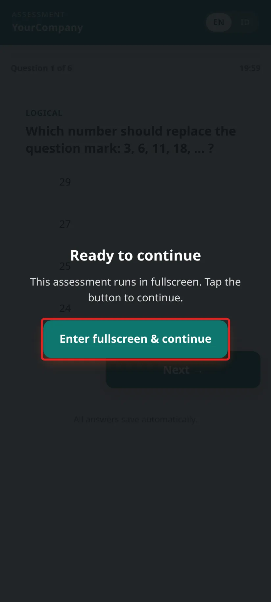
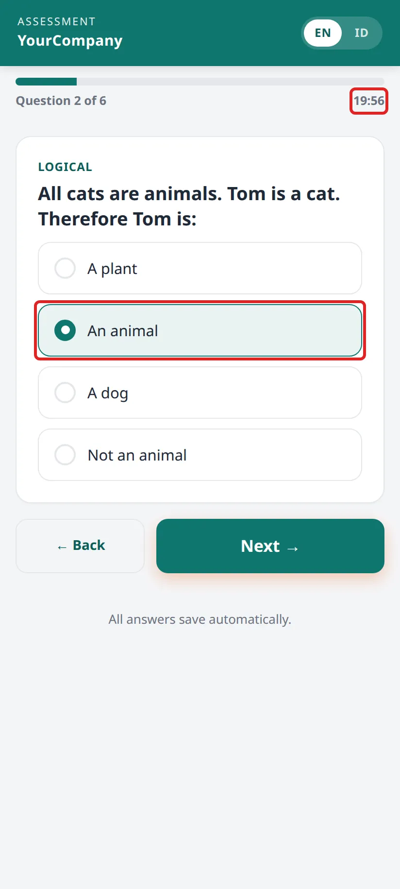
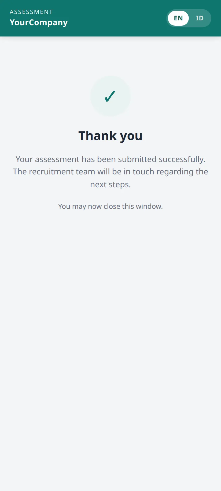
Built for recruiters
Ready-made tests
DISC, Big Five (OCEAN) and a sample aptitude test to use or adapt; build your own in minutes.
Server-side timer
The clock keeps running if the page is closed or refreshed; the test is submitted when time is up.
Anti-cheat
Tab switches, leaving fullscreen, copy / paste and right-click are logged; optional auto-submit after N violations; randomized questions and options; optional identity photo.
Scored results
Objective score and pass mark, or a per-scale personality profile; HR-only, never shown to the candidate.
Email invitations
Private link per candidate, validity window, resend, automatic expiry.
Multilingual
The candidate switches between your installed languages (Indonesian translation included).
Step by step
Build or adapt a test
Questions (single, multiple, Likert, forced choice, free text), scales, scoring mode, time limit, randomization and anti-cheat options. DISC, Big Five and a sample aptitude test are included.
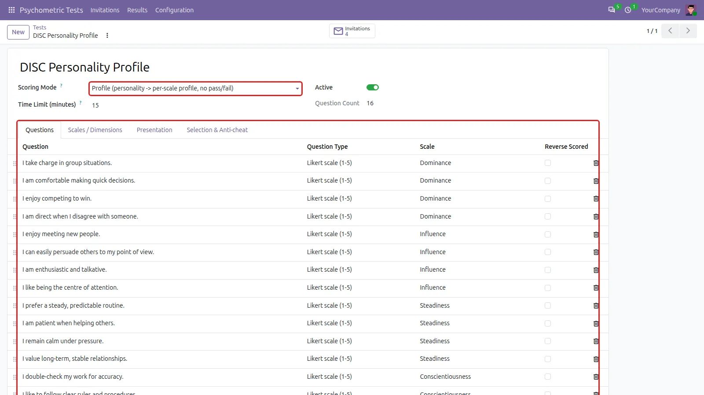
Invite the candidate
One click sends the invitation in your company colours with a private link and the deadline.
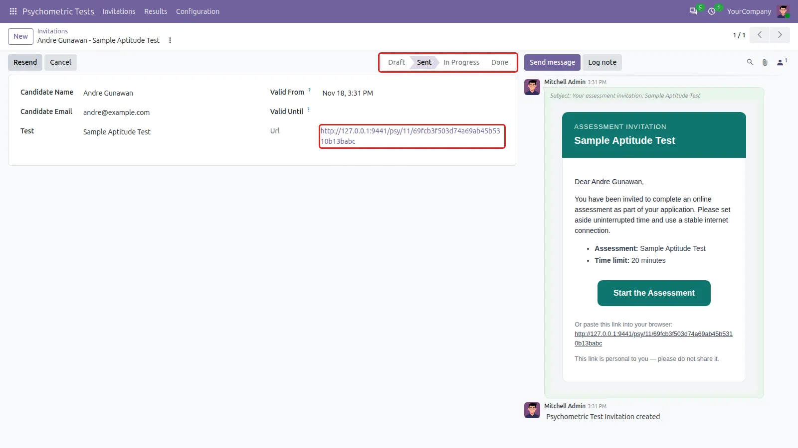
Aptitude result
Score, percentage, pass / fail against the pass mark, timing, IP and identity photo.
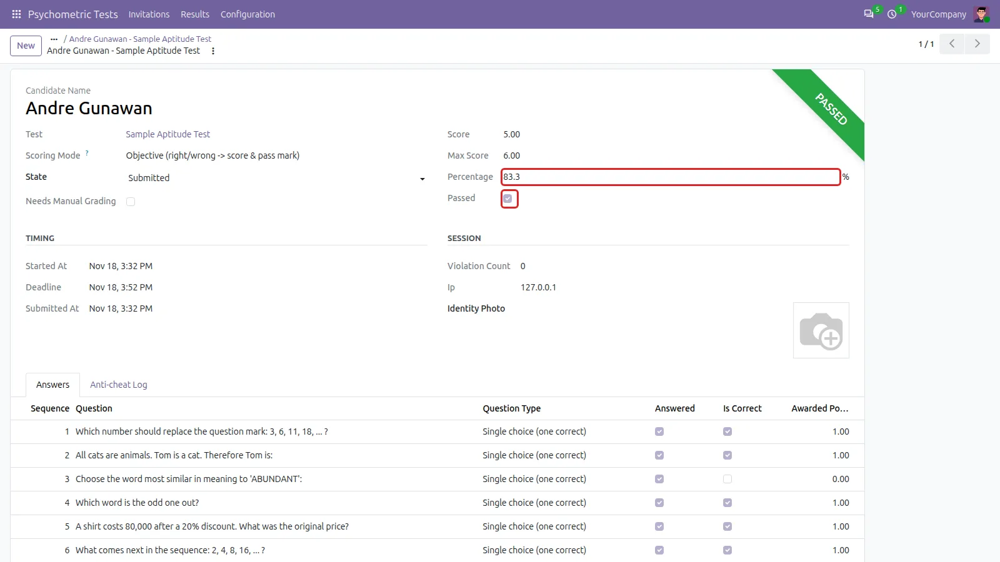
Every answer
Each question with the answer, whether it was correct and the points awarded.
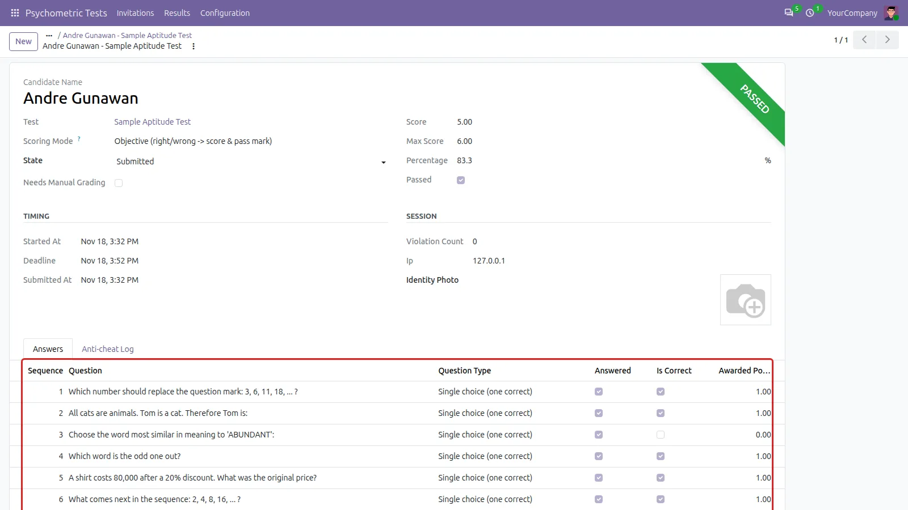
Personality profile
Per-scale scores for DISC, Big Five or your own scales.
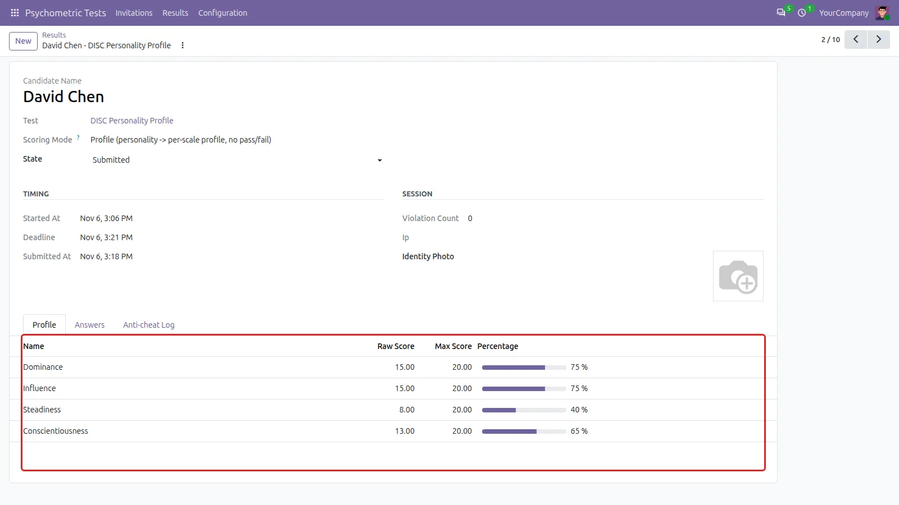
All results
Filter and compare candidates; violations are highlighted.
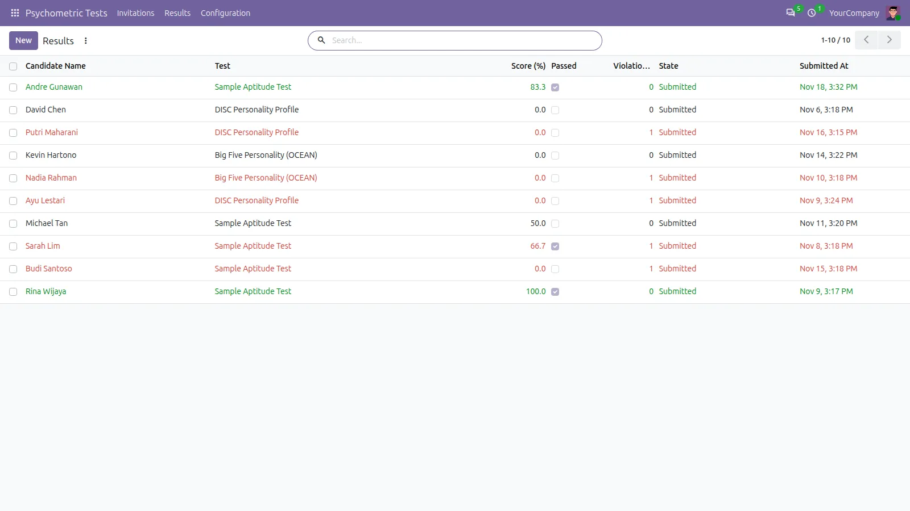
PDF report
Share the result with the hiring manager.
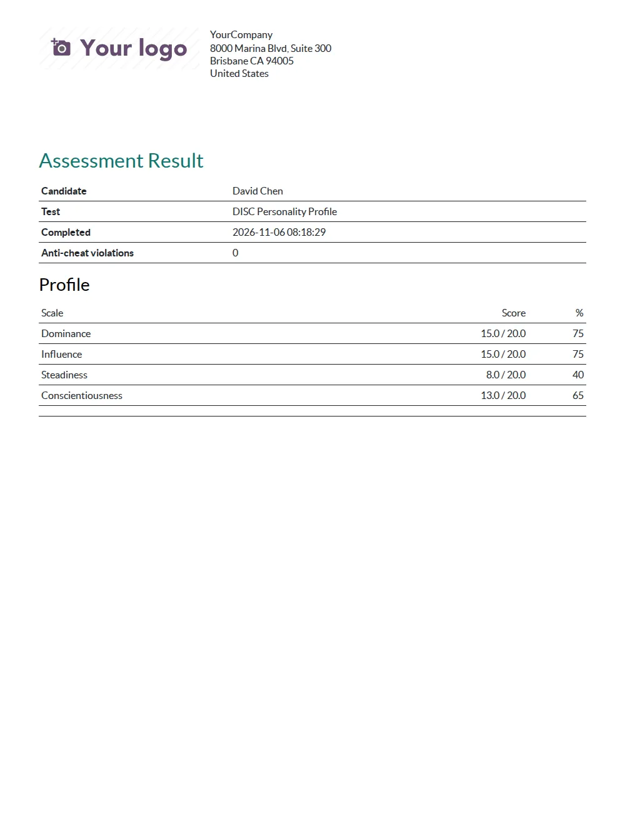
Ready after install
- Open Psychometric Tests → Configuration → Tests: review the included DISC, Big Five and aptitude tests.
- Invitations → New: candidate name, email and test, then Send Invitation.
- Follow the results under Results.
Requirements: Odoo 20.0; depends on base / mail only (no HR or Recruitment app needed). The page uses your company colour (Settings → Document Layout). Outgoing email must be configured. HTTPS is needed for the optional identity photo.
Get Psychometric Test
Odoo 20.0: not listed on the store yet. Ask at tama.odoo@gmail.com.
Questions before buying? Write to tama.odoo@gmail.com.